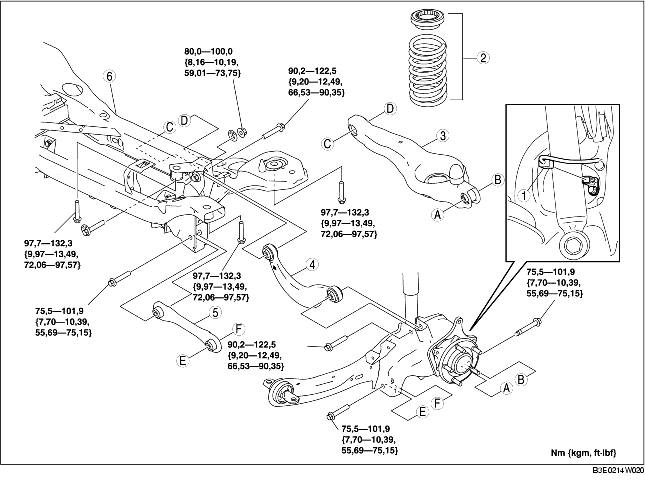

1. Verwijder de rijniveausensor achter.
(Zie VERWIJDEREN/PLAATSEN RIJNIVEAUSENSOR.)
2. Verwijder de stabilisatorstang achter.
(Zie VERWIJDEREN/PLAATSEN STABILISATORSTANG ACHTER.)
3. Verwijder het koolstoffilter.
(Zie VERWIJDEREN/PLAATSEN KOOLSTOFFILTER [ZJ, Z6, LF].)
4. Verwijder de onderdelen in de aangegeven volgorde, zie de tabel.
5. Plaats de onderdelen in omgekeerde volgorde.
6. Controleer de wieluitlijning en corrigeer deze indien nodig.
(Zie ACHTERWIELUITLIJNING.)

.
|
1
|
Stekker wielsensor
|
|
2
|
Schroefveer achter
|
|
3
|
Onderste draagarm achter
|
|
4
|
Bovenste draagarm achter
|
|
5
|
Achterste dwarsarm
|
|
6
|
Subframe achter
|
1. Ondersteun het subframe achter met de krik en verwijder de bout.
2. Verwijder het subframe achter.